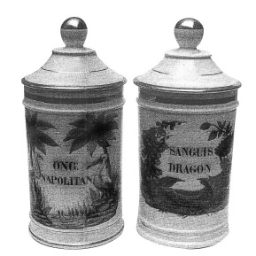

ŞEKİL 67. 1875 Paris yapımı silindirik eczacı çömlekleri: İlaç adları, sağda iki şifalı bitki ile çelenk şeklinde çevrilmiş, solda ise bir pelikan ile bir flamingo görülmektedir. Sağdaki kapta, Doğu Hindistan’ın ejderha ağacının çoğu kez toz haline getirilmiş kırmızı reçinesi olan “Ejderha Kanı” (SANGUİS DRAGON) içermekte ve bu madde kan dindirici ve dâhilî olarak da salya akmasına ve ishale karşı kullanılırdı. Soldaki kap ise saf civanın domuz yağına yedirilmesi ile hazırlanan ve “Napoli merhemi” [ONG(UENTUM) NAPOLİTAN(UM)] diye adlandırılan gri renkli ünlü civa merheminin kabı olarak kullanılmaktadır. Bu merhem, uzun süre boyunca frengi yaralarına sürülerek, aynı zamanda da bitleri yok etmek amacıyla kullanılmıştır (Alman Eczacılık Müzesi, Heidelberg).47
1708 yılında Johann Friedrich Böttger (1682-1719) tarafından beyaz porselenin Avrupa’da geliştirilmesi, kendi uygun özellikleri yoluyla eczaların korunması amacıyla kap yapımında fayans üretiminin yerine geçerek onu geriletmiştir. Urbino kenti, Rönesans İtalya’sının fayans üretim merkezi olup oradaki atölyelerden en ünlülerinden biri, çömlekçi Fontana ailesine ve ailenin ünlü ustası Orazio Fontana’ya (1510-1571) aitti. 18. yüzyıl İspanya’sında Talavera kenti, seramik ecza kaplarının ana üretim merkezi olmuştur.
Bunların dışında, eczaların saklanmasında ahşap, kalay (teneke), kurşun-kalay alaşımlı (ŞEKİL 68) ve gümüş kaplar da kullanılmıştır. Erken Yeniçağ’da eczanelerde çoğu zaman merhem türü ilaçları saklamak için kalay-antimon alaşımından (İng. “pewter”, Alm. “Zinn”) yapılmış kaplar kullanılırdı. Bu alaşım, yemek ve içki takımlarının yapımında yaygın olarak kullanılmışsa da bilinen toksik etkisi nedeniyle 17. yüzyıldan sonra eczanelerde kullanımı azalmıştır.47